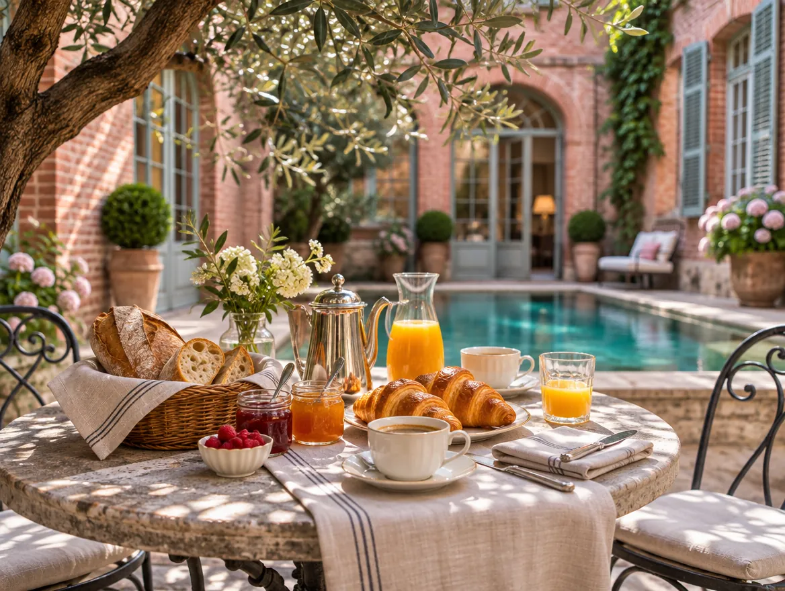
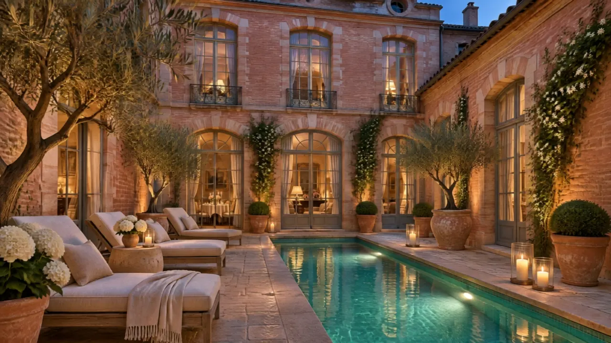
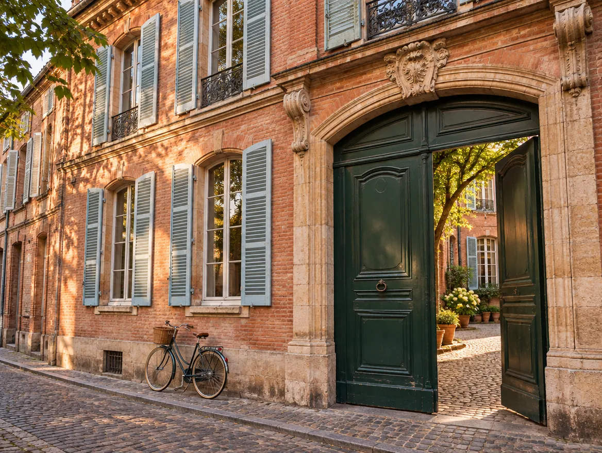

21 h 30 le bassin s'allume
le soir, la cour
Les fenêtres en arc s'éclairent une à une et l'eau vire au turquoise. Nous laissons des bougies, une carafe et deux verres sous les oliviers ; le bassin est à vous jusqu'à 21 h, la cour toute la nuit.
Un hôtel particulier de 1748, une cour pavée, un bassin de neuf mètres. Vous poussez la porte cochère : la ville reste dehors.
Fig. 0 — la cour, un soir de septembre, 21 h 40
La nuit, dès165 €petit-déjeuner dans la courIci, on vous remet une clé, pas un badge. Cinq chambres seulement : nous connaissons votre prénom, l'heure de votre café et la table que vous préférez dans la cour.

21 h 30 le bassin s'allume
Les fenêtres en arc s'éclairent une à une et l'eau vire au turquoise. Nous laissons des bougies, une carafe et deux verres sous les oliviers ; le bassin est à vous jusqu'à 21 h, la cour toute la nuit.
8 h 10 les volets de la suite
Vous ouvrez les volets sur les toits de tuile et le clocher. Le café monte à l'heure que vous avez cochée la veille ; les croissants viennent du fournil au bout de la rue.
Nous avons ouvert la maison en deux, comme une maison de poupée. Choisissez vos dates, faites-la tourner : les chambres libres restent claires, les autres se hachurent.

Toujours compris
Le linge et les draps de lin, le wifi par fibre, le thé et le café en chambre, l'accès au bassin, une carte du quartier annotée par Jeanne.
« On a ouvert les volets sur le clocher et on a décidé de rester une nuit de plus. »
4,9sur 5 — 212 avis
depuis l'ouverture en 2019
« Le bassin éclairé, à 20 h 30, pour nous seuls. Et un petit-déjeuner qui tient jusqu'au dîner. »
« Jeanne nous avait noté trois adresses sur un carton. On a fait les trois, on reviendra pour la quatrième. »

Jeanne et Baptiste ont repris la maison en 2019, après deux ans de chantier : briques rejointoyées à la chaux, volets repeints, bassin creusé là où se trouvait l'ancien lavoir.
La rue est à sens unique et presque sans voitures. Tout se fait à pied : le marché le matin, la Garonne en fin de journée, et le soir on rentre par la petite porte dans la grande.